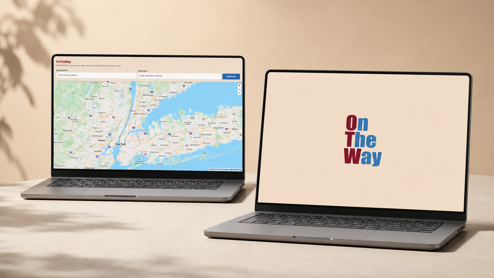

"Food near me" tools only ever look at where you're standing right now — ignoring the fact that you're already headed somewhere, and the best stop might be a few minutes off your path, not next door.
OnTheWay flips the question from "what's near me" to "what's along my way" — enter a start and destination, and it surfaces food options on your route, with the actual detour cost in minutes for each one.
The whole flow runs through three Mapbox APIs working together — geocoding, directions, and search — wired into a small set of focused JS modules.
The app is split into focused modules so map logic, API calls, and UI stay decoupled: config.js centralizes API keys, mapbox-api.js handles geocoding, directions, and search, map-manager.js owns routes and markers, ui-manager.js drives the sidebar and status messages, and app.js ties the flow together.
Explore the live platform and see route-aware food discovery in action.